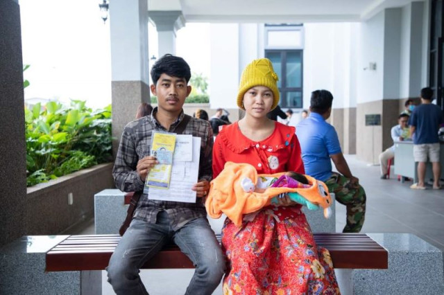
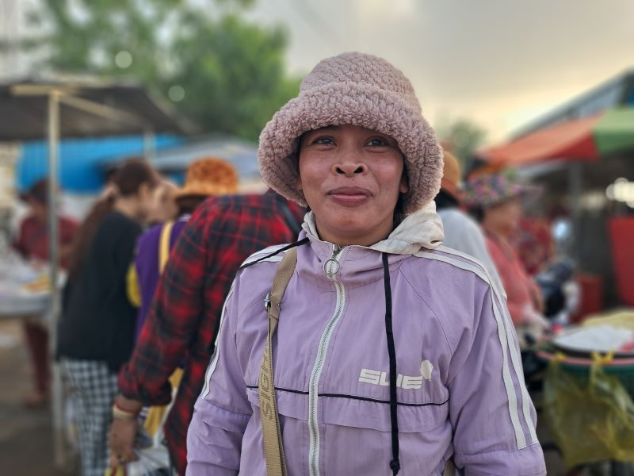
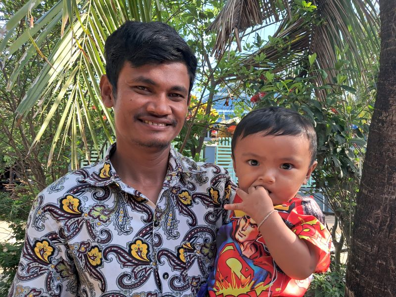
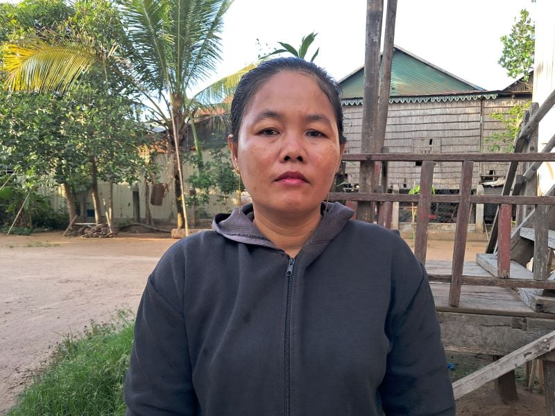
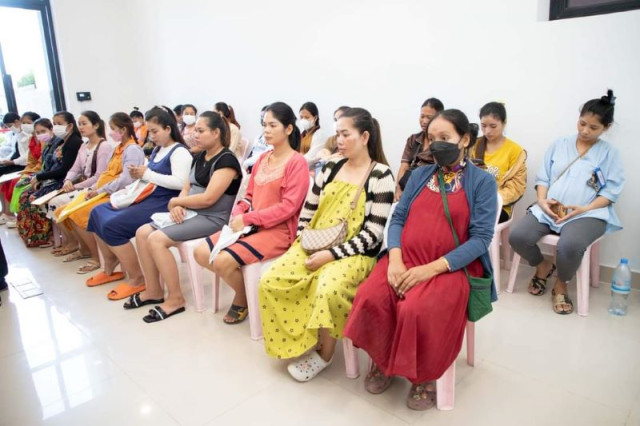
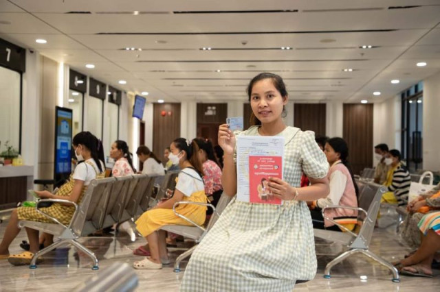

រូបតំណាង (រូបភាពពីបេឡាជាតិរបបសន្តិសុខសង្គម)
ភ្នំពេញ៖ កម្មការិនី ដែលបម្រើការងារនៅក្នុងឧស្សាហការកាត់ដេរសម្លៀកបំពាក់ និងវាយនភណ្ឌ ពិសេសក្រុមគ្រួសារស្ត្រីមានផ្ទៃពោះ ពិតជារីករាយខ្លាំងណាស់ នៅពេលពួកគេមានប័ណ្ណបេឡាសន្តិសុខសង្គម (ប.ស.ស)។ កម្មការិនីរោងចក្រដែលបានប្រើប្រាស់ បណ្ណ ប.ស.ស ដើម្បីពិនិត្យ តាមដានសុខភាព អំឡុងពេលពពោះ ពេលសម្រាក និងក្រោយសម្រាល មន្ទីរពេទ្យរដ្ឋ និងពេទ្យដៃគូរបស់ ប.ស.ស បានអះអាងថា ប័ណ្ណ ប.ស.ស បានសម្រាកបន្ទុកចំណាយមួយចំនួនធំនៅក្នុងគ្រួសារ។ មិនតែប៉ុណ្ណោះ ប.ស.ស បានក្លាយទៅជាប័ណ្ណធានាសុខភាពដ៏កក់ក្តៅ ពេលពួកទៅមន្ទីរពេទ្យ ហើយពួកគេមិនបារម្ភចំពោះការចំណាយព្យាបាលនោះឡើយ។ កម្មការិនីទាំងនោះ ជឿជាក់ និងសង្ឃឹមថា ប័ណ្ណ ប.ស.ស ដែលពួកគេចាត់ទុកថាជាប័ណ្ណធានាសុខភាព និងហិរញ្ញវត្ថុនេះ នឹងជួយឱ្យជីវភាពគ្រួសាររបស់ខ្លួនបានល្អប្រសើរឡើង។
បេឡាជាតិរបបសន្តិសុខសង្គម បានផ្តល់អត្ថប្រយោជន៍ធំៗចំនួន៣ សម្រាប់កម្មករនិយោជិត ក្នុងវិស័យកាត់ដេរ និងវាយនភណ្ឌ ដែលបានបង់វិភាគទាន។ ក្នុងនោះរួមមានការគាំពារ លើការព្យាបាលជំងឺ គ្រោះថ្នាក់ការងារ ពេលមានផ្ទៃពោះ និងប្រាក់សោធន។ ជាមួយគ្នានេះកន្លងទៅ មានកម្មករនិយោជិតជាច្រើនរូបនៅកម្ពុជា បានទទួលការគាំពារ ពីបេឡាជាតិរបបសន្តិសុខសង្គម។
អ្នកស្រី យន់ រដ្ឋា ជាកម្មការិនីមួយរូប រស់នៅក្នុងភូមិព្រែកដាច់ ឃុំព្រែកដាច់ ស្រុកលើកដែក ខេត្តកណ្តាល បានចូលបម្រើការងារក្នុងរោងចក្រកាត់ដេរសម្លៀកបំពាក់ ចាប់តាំងពីឆ្នាំ២០១១ រហូតដល់បច្ចុប្បន្ន។ អំឡុងពេលបម្រើការងារក្នុងរោងចក្រ ជាង១០ឆ្នាំមកនេះ អ្នកស្រី រដ្ឋា បានបំពេញគ្រប់លក្ខខ័ណ្ឌ ដើម្បីអាចទទួលបានអត្ថប្រយោជន៍ ពីបេឡាជាតិរបបសន្តិសុខសង្គម ក្នុងគោលបំណងសម្រួលជីវភាពគ្រួសារ។

អ្នកស្រី យន់ រដ្ឋា កម្មការិនីរោងចក្រ
ស្ត្រីសម្បុរសរូបនេះ ថា ប.ស.ស បានជួយសម្រួលបន្ទុកចំណាយថ្លៃថ្នាំ ពេលខ្លួនមានជំងឺធ្ងន់ធ្ងរ អំឡុងពេលមានគ័ភ៌ ពេលលំហែមាតុភាព និងក្រោយពេលសម្រាល់ រហូតដល់កូនអ្នកស្រី មានអាយុក្រោម២ឆ្នាំ។
«និយាយទៅខ្ញុំពេញចិត្ត នៅពេលបានទទួលការគាំពារពី ប.ស.ស។ ពេលខ្ញុំមានផ្ទៃពោះប័ណ្ណ នេះ បានក្លាយជាវត្ថុសំខាន់ដែលមិនអាចខ្វះបាន។ យើងធ្លាប់គិតថា ពិបាកណាស់នៅពេលយើងមានផ្ទៃពោះពេលកំពុងធ្វើការ។ ចិត្តមួយខ្លាចអត់បានប្រាក់ខែ មួយទៀតខ្លាចរកប្រាក់មិនគ្រប់ សម្រាប់ចំណាយពេលឆ្លងទន្លេ។ ប៉ុន្ដែពេលមាន ប.ស.ស អាចជួយសម្រាលបន្ទុក និងកង្វល់ទាំងអស់នោះបាន ព្រោះពេលយើងទៅពេទ្យ ប្រើប័ណ្ណជំនួសលុយ»។ នេះជាការលើកឡើងរបស់អ្នកស្រ្តី រដ្ឋា។
ស្រ្តីរូបនេះបន្ថែមថា សម្រាប់សេវាកម្មនៅតាមមន្ទីរពេទ្យរដ្ឋ ដែលអ្នកស្រីធ្លាប់ ទៅទទួលកន្លងមក បានផ្ដល់ការយកចិត្តទុក្ខដាក់ មើលថែអ្នកមានផ្ទៃពោះ ប្រកបដោយវិជ្ជាជីវៈ និងក្រមសីលធម៌ យ៉ាងខ្ជាប់ខ្ជួន។ អ្នកស្រីថា ការបង្កើតឱ្យមាន ប.ស.ស សម្រាប់ផ្តល់ការគាំពារ ដល់កម្មករ កម្មការិនីរោងចក្រ ពិតជាដំណោះស្រាយដ៏ល្អ ក្នុងការរួមចំណែកយ៉ាងសកម្ម ដល់ការលើកកម្ពស់សិទ្ធិ សម្រាប់និយោជិត កំពុងបម្រើការក្នុងខ្សែច្រវាក់ផលិតកម្ម។
រូបតំណាង (រូបភាពពីបេឡាជាតិរបបសន្តិសុខសង្គម)
អ្នកស្រី រដ្ឋា បន្ថែម៖«សម្រាប់ខ្ញុំប័ណ្ណ ប.ស.ស ពិតជាល្អណាស់ សម្រាប់កម្មករ កម្មការិនីរោងចក្រ។ ដោយសារក្នុងពេលប្រើយើងអាចទទួលបាន ការគាំពារដូចជា សុខភាព គ្រោះថ្នាក់ការ ងារ និងពេលមានផ្ទៃពោះ។ យើងគ្រាន់តែបង់ជាប្រចាំខែ ទុកនៅ ប.ស.ស រួចពីនោះ យើងនឹងបានការការពារ ត្រឡប់មកវិញ។ វាដូចជាការសន្សំប្រាក់ ទុកពេលត្រូវការចាំបាច់ដែរ។ ខ្ញុំពេញចិត្តណាស់ ទោះពេលនេះ ខ្ញុំមិនទាន់ប្រើប័ណ្ណនេះ អស់លទ្ធភាពក្តី»។
ចំណែកអ្នកស្រី អ៊ុំ សារ៉េត ជាកម្មការិនីវ័យ៤០ឆ្នាំ ក៏មានប័ណ្ណ ប.ស.ស ដែរ។ រស់នៅក្នុងភូមិសំរោងក្អែ ឃុំសំរោងធំ ក្នុងស្រុកលើកដែក បានលើកឡើងថា អ្នកស្រីចុះឈ្មោះប្រើ ប.ស.ស យូរមកហើយ។ អ្នកស្រីអះអាងថា កន្លងទៅ អ្នកស្រីមិនសូវដឹងច្រើនពីអត្ថប្រយោជន៍ ប័ណ្ណ ប.ស.ស ឡើយ។ ប៉ុន្ដែក្រោយមានផ្ទៃពោះ ទើបអ្នកស្រីដឹងស៊ីជម្រៅ ពីអត្ថប្រយោជន៍ចំពោះការប្រើប័ណ្ណ ប.ស.ស។
អ្នកស្រី អ៊ុ សារ៉េត កម្មការិនីរោងចក្រ
អ្នកស្រីថា ការប្រើសេវាកម្មសុខភាព ក្នុងពេលមានផ្ទៃពោះ ត្រូវចំណាយប្រាក់ច្រើន។ អ្នកស្រីបន្ថែមថា ប្រសិនខ្លួនមិនមានប័ណ្ណ ប.ស.ស ទេ នោះបន្ទុកចំណាយទាំងនោះ ប្រាកដក្លាយជាសម្ពាធ សម្រាប់អ្នកស្រីនិងគ្រួសារ ជាក់ជាមិនខាន។
នៅពេលទទួលបាន ការគាំពារពីបេឡាជាតិ ទាំងការចំណាយលើសេវាសុខភាព និងប្រាក់៧០ភាគរយនៃប្រាក់ខែ ក្នុងពេលមាតុភាព ធ្វើឱ្យអ្នកស្រីមានអារម្មណ៍ស្រាលខ្លួន ហើយសប្បាយចិត្តខ្លាំង។ ទន្ទឹមនោះ អ្នកស្រី សារ៉េត អះអាងថា អត្ថប្រយោជន៍ដែលទទួលពី ប.ស.ស ធ្វើឱ្យអ្នកស្រី ក៏ដូចជាកម្មករ និយោជិតផ្សេងទៀត មានទំនុកចិត្ត ជឿជាក់ខ្ពស់ លើការបង់វិភាគទានប្រចាំខែ។
«ខ្ញុំមានអារម្មណ៍ថា ខ្ញុំពិតជាសំណាងខ្លាំងណាស់ ពេលខ្ញុំប្រើប័ណ្ណ ប.ស.ស ។ ខ្ញុំមិនសូវភ័យទេ ពេលមានផ្ទៃពោះ ព្រោះរាល់ពេលទៅពិនិត្យផ្ទៃពោះ ខ្ញុំប្រើ ប.ស.ស ដូច្នេះមិនចាំបាច់ប្រើប្រាក់ផ្ទាល់ខ្លួនឡើយ។ រាល់ពេលទៅពិនិត្យ ខ្ញុំបានប្រាក់មកវិញទៀត។ ខ្ញុំគិតថា នេះជាការផ្ដល់ត្រឡប់វិញយ៉ាងប្រសើរ។ ខ្ញុំពេញចិត្ត ខ្ញុំរីករាយ ហើយខ្ញុំពិតជាសប្បាយចិត្តខ្លាំងណាស់ ដែលរដ្ឋាភិបាល គិតគូរដល់ពួកយើងយ៉ាងនេះ»។
រីឯលោក អ៊ុល សីហា ត្រូវជាស្វាមីរបស់កម្មការិនីឈ្មោះ នូវ កញ្ញា ក៏មិនខុសពីកម្មការិនីខាងលើដែរ លោកពិតជាសាទរចំពោះរាជរដ្ឋាភិបាល ដែលបានបង្កើតប្រព័ន្ធគាំពារ ពលរដ្ឋបែបនេះ ពិសេសអត្ថប្រយោជន៍ទាំងនោះ ពិតជាមានសារសំខាន់ខ្លាំង សម្រាប់ស្ត្រីមានផ្ទៃពោះ។
លោក អ៊ុល សីហា ស្វាមីកម្មការិនី នូវ កញ្ញា
រស់នៅក្នុងភូមិព្រែកដាច់ ឃុំព្រែកដាច់ ស្រុកលើកដែក ខេត្តកណ្ដាល លោក សីហា ថាប្រពន្ធរបស់លោក ក៏បានធ្វើ ក៏បានធ្វើប័ណ្ណ ប.ស.សដែរ ហើយប័ណ្ណនេះ បានជួយជីវភាពរបស់លោកឱ្យប្រសើរជាងមុនច្រើន។
បុរសសម្បុរស្រអែម រាងខ្ពស់ស្រឡះ រូបនេះអះអាង៖«ប្រពន្ឋខ្ញុំក៏ប្រើ ប.ស.ស ដែរ។ ក្រោយពេលប្រើគ្រួសារខ្ញុំ មានជីវភាពល្អប្រសើរច្រើន ដោយសារប័ណ្ណនេះ បានសម្រួលការចំណាយមួយភាគធំ នៅពេលគាត់ទៅមណ្ឌលសុខភាព។ ពេលពិនិត្យផ្ទៃពោះរាល់លើក ប្រពន្ធខ្ញុំតែងទទួលបានប្រាក់ត្រឡប់មកវិញ៨ម៉ឺនរៀល។ ប្រាក់នេះ អាចយកមកដោះទាល់លើការចំ ណាយចាំបាច់មួយចំនួន ដូចជា ម្ហូបអារហារ ថ្នាំសង្កូវ ពិសេសទៅលើថ្លៃទឹកដោះគោកូន»។
បុរសកូន២រូបនេះ សារភាពថា កាលកំណើតកូនស្រីច្បង លោកពុំសូវបាននាំភរិយា ទៅពិនិត្យផ្ទៃពោះទៀតទាត់ឡើយ ដ្បិតអីកាលនោះ លោកមិនទាន់មានប័ណ្ណ ប.ស.ស ហើយការចំណាយ កាលនោះគឺជាបន្ទុកធំមួយ សម្រាប់គ្រួសារលោក ដែលទើបតែចាប់ដៃគ្នាថ្មីថ្មោង។ ប៉ុន្តែកំណើតកូនទី២នេះ លោកមានលទ្ធភាព នាំប្រពន្ធទៅពិនិត្យសុខភាព បានច្រើនជាងមុនឆ្ងាយ ព្រោះតែមានប័ណ្ណ ប.ស.ស។
«និយាយទៅ ពេលមាន ប.ស.ស ខ្ញុំសប្បាយចិត្តណាស់។ មិនមែនតែខ្ញុំទេ ប្រពន្ធខ្ញុំ ក៏រីករាយដែរ ព្រោះពួកយើងគិតថា ការទៅពេទ្យ មិនមែនជាបន្ទុកទៀតទេ។ ពេលមានប័ណ្ណ ប.ស.ស ធ្វើឱ្យខ្ញុំដឹងច្រើន ពីការថែទាំសុខភាពផ្លូវកាយ ផ្លូវចិត្តម្ដាយ និងទារកដែរ។ ពេលបានទៅពិនិត្យ សុខភាពទៀតទាន់ ខ្ញុំសង្កេតឃើញថា ប្រពន្ធខ្ញុំ មានសុខភាពផ្លូវចិត្តល្អ ជាងកាលកូនដំបូង ។ ពេលសម្រាលកូន យើងទទួលបានប្រាក់ផ្សេងទៀត។ យើងសប្បាយចិត្ត»។ នេះជាសេចក្ដីអំណរ របស់លោក សីហា។
ជាកម្មការិនីរោងចក្រមួយរូបដែរ កញ្ញា ប៉ូ សុផន បានធ្វើការក្នុងរោងចក្រមួយ ក្នុងភូមិព្រែកតូច ឃុំព្រែកដាច់ ស្រុកលើកដែក ខេត្តកណ្ដាល ប្រមាណជាង១០ឆ្នាំមកហើយ។ កញ្ញា ក៏មានធ្វើប័ណ្ណ ប.ស.ស ដែរ។ ពុំដែលមានបញ្ហាសុខភាព ដូច្នេះកញ្ញា ពុំទាន់បានប្រើប្រាស់ប័ណ្ណ ប.ស.ស នេះទេ ហើយក៏មិនទាន់បានដឹងច្រើន ពីអត្ថប្រយោជន៍នៃប័ណ្ណនេះដែរ។
កញ្ញា ប៉ូ សុផន កម្មការិនីរោងចក្រ
ទោះជាយ៉ាងណា ដោយសារមានមិត្ត និងអ្នករួមការងារ ធ្លាប់បានទទួលអត្ថប្រយោជន៍ ពីប័ណ្ណនេះ កញ្ញា មានក្ដីសង្ឃឹម និងជឿជាក់យ៉ាងមុតមាំ ថានៅថ្ងៃណាមួយ ដែលខ្លួនត្រូវការប្រើ ប័ណ្ណនេះ នឹងផ្ដល់អត្ថប្រយោជន៍ឱ្យខ្លួនបានពេញលេញ។
«ខ្ញុំដឹងថា មានប្រយោជន៍ អាចប្រើបានពេលយើងឈឺ ពេលមានគ្រោះថ្នាក់ការងារ ឬមានផ្ទៃពោះ។ ប៉ុន្ដែខ្ញុំក៏មិនសូវច្បាស់ ពីដំណើរការនៃការប្រើប្រាស់ដែរ ដោយសារខ្ញុំមិនទាន់មានបទពិសោធប្រើផ្ទាល់។ តែខ្ញុំដឹងច្បាស់ថា នៅពេលមានបញ្ហា ខ្ញុំពិតជាអាចរំពឹងលើ ប.ស.ស បាន១០០ភាគរយ។ ព្រោះអ្នករួមការងារ ពេលមានបញ្ហាគេប្រើវា ដើម្បីសម្រួលបានការលំបាកបានច្រើន»។
លោក ហ៊ បញ្ញា ជាមន្ត្រីមន្ត្រីសម្របសម្រួល ប.ស.ស ប្រចាំមន្ទីរពេទ្យបង្អែកស្រុកលើកដែក ខេត្តកណ្ដាលលើកឡើងថា បច្ចុប្បន្នកម្មករនិយោជិតភាគច្រើន បានប្រើសេវាកម្ម ប.ស.ស ដើម្បីពិនិត្យសុខភាពជាប្រចាំ នៅតាមមណ្ឌលសុខភាព ឬទីតាំងដៃគូ ប.ស.ស ជាពិសេសស្ត្រីមានផ្ទៃពោះ។ ទន្ទឹមនេះ លោកសង្កេតឃើញថា ការសហការណ៍របស់ដៃគូរ ជាពិសេសមណ្ឌលសុខភាព បានផ្តល់សេវាកម្ម ឆ្លើយតបទៅនឹងតម្រូវការ កម្មករនិយោជិត បានកាន់តែច្រើន និងប្រសើរជាងមុន។ ព័ត៌មានទាំងនោះ លោកទទួលបានពី ការផ្តល់ព័ត៌មានត្រឡប់វិញ ពីកម្មករក្រោយពេលទទួលសេវាសុខភាព។
លោក ហ៊ បញ្ញា មន្រ្តីសម្របសម្រួល ប ស ស ប្រចាំមណ្ឌលសុខភាពបង្អែកស្រុកលើកដែក
«យើងសង្កេតឃើញថា កម្មករដែលប្រើ ប.ស.ស មកពិនិត្យសុខភាព មានការកើនឡើងជាងមុន។ ជាមធ្យម មួយខែអាចមានចន្លោះពី៥០ ទៅ៦០នាក់។ ជាមួយគ្នានេះ យើងក៏សង្កេតឃើញថា អ្នកជំងឺថ្មីៗក៏មានដែរ។ មាន ប.ស.ស ពួកគាត់ចំណេញច្រើនណាស់។ ពេទ្យ ពិតជាចង់ឱ្យ កម្មករទាំងអស់ ស្វែងយល់ពីអត្ថប្រយោជន៍នៃប័ណ្ណនេះ និងអាចប្រើឱ្យអស់លទ្ធភាព»។ នេះជាការបញ្ជាក់បន្ថែម របស់លោក ហ៊ បញ្ញា។
ទោះបីការប្រើប្រាស់ ប័ណ្ណ ប.ស.ស របស់កម្មករនិយោជិត នាពេលបច្ចុប្បន្ន មានភាពវិជ្ជមានច្រើនហើយក៏ពិតមែន ប៉ុន្ដែក៏នៅមានបញ្ហារើសអើងមួយចំនួន ចំពោះអ្នកកាន់ប័ណ្ណ ប.ស.ស ដែរ។ កម្មការិនី យន់ រដ្ឋា បានលើកឡើងថា នៅពេលអ្នកស្រីទៅពិនិត្យសុខភាព នៅមណ្ឌលសុខភាពមួយកន្លែង ក្នុងស្រុកលើកដែក មានបុគ្គលិកជំនាញ ក្នុងមន្ទីរពេទ្យមួយចំនួនតូច រើសអើសខ្លួន ដោយសារតែអ្នកស្រី ប្រើប័ណ្ណ ប.ស.ស។ ការរើសអើងនោះ បង្ហាញតាមរយៈ កាយវិការមិនយកចិត្តទុកដាក់ និងមិនពេញចិត្ត ក្នុងការបម្រើសេវាកម្ម។ អ្នកស្រីអះអាងថា មិត្តរួមការងារផ្សេងទៀតរបស់អ្នកស្រី ក៏ជួបករណីបែបនេះដែរ។
«ពេទ្យភាគច្រើនល្អ ប៉ុន្ដែនៅមានពេទ្យខ្លះ នៅតែប្រើអាកប្បកិរិយាមិនសមរម្យ និងមិនឱ្យតម្លៃយើង ពេលយើងប្រើ ប.ស.ស។ ខ្ញុំបញ្ជាក់ មិនមែនពេទ្យទាំងអស់ទេ។ ខ្ញុំជួបញយដងហើយ ខ្ញុំយកកូនទៅពិនិត្យ ដល់ម៉ោងពេទ្យចូលធ្វើការហើយ ប៉ុន្ដែពេទ្យមិនទាន់ចូល បែរជាតម្រូវឱ្យខ្ញុំអង្គុយចាំគាត់ ហូបអារហារពេលព្រឹក ក្នុងម៉ោងការងារ។ ហើយពេទ្យខ្លះទៀត ខ្ជះខ្ជាយពេលវេលារត់ឯកសារ ដោយពន្យារពេលធ្វើការ យកទៅជជែកគ្នា និងលេងទូរសព្ទជាដើម។ មិនមែនប្រទះម្ដងទេ មានច្រើនដងទើបខ្ញុំនិយាយ»។ នេះជាការសង្កេតរបស់ អ្នកស្រី រដ្ឋា។
រូបតំណាង (រូបភាពពីបេឡាជាតិរបបសន្តិសុខសង្គម)
ជាមួយគ្នានេះ អ្នកស្រី អ៊ុំ សារ៉េត លើកឡើងថា តាមធម្មតានៅពេលពិនិត្យផ្ទៃពោះ ខាងរោងចក្រ បានសម្រួលច្បាប់កន្លះថ្ងៃ ដើម្បីឱ្យកម្មការិនី ទៅពិនិត្យសុខភាព។ អ្នកស្រីថា នៅពេលខ្លះ បានចូលពេទ្យពិនិត្យលឿន។ ប៉ុន្ដែមានពេលខ្លះ ដំណើរការពិនិត្យ ឬការផ្តល់សេវាកម្ម ពីដៃគូ ប.ស.ស មានភាពយឺតយ៉ាវ ជាហេតុបណ្ដាលឱ្យអ្នកស្រីត្រូវធ្វើដំណើរ តាមដងផ្លូវដោយប្រញាប់ ដើម្បីអាចចូលធ្វើការងារទាន់ពេលវេលា។ ហើយនេះជាការព្រួយបារម្ភ របស់អ្នកស្រី ពីសុវត្ថិភាពលើដងផ្លូវ។
«និយាយនេះ មិនមែនទាមទាឲ្យលើសគេទេ ប៉ុន្ដែខ្ញុំមានពេលត្រឹមតែកន្លះថ្ងៃប៉ុណ្ណេះ បន្ទាប់មកត្រូវទៅដល់កន្លែងចូលធ្វើការវិញ។ បើមណ្ឌលនោះនៅជិត មិនសូវអីទេ តែសម្រាប់ខ្ញុំ ពីកន្លែងមណ្ឌលសុខភាព ទៅរោងចក្រជាង២០គីឡូក្រាមឯណោះ។ ដូចដឹងស្រាប់ សម្រាប់ស្ត្រីមានផ្ទៃ មិនថាឈរចាំ ដើរ ឬធ្វើដំណើរ មិនមែនរហ័សដូចខ្លួនមួយឡើយ។ ដូច្នេះបើអាច សូមឱ្យ ប.ស.ស ជួយពង្រឹងចំណុចនេះ ជាមួយដៃគូផង។ ដើម្បីជួយសម្រួលឱ្យលឿនបន្តិច អាចងាយការពារហានិភ័យ និងសុវត្ថិភាពពួកយើង»។ នេះជាការស្នើសុំ របស់អ្នកស្រី សារ៉េត។
បើតាមកញ្ញា ផល ចាន់ថា ជាមន្ត្រីចងក្រងសហព័ន្ឋសហជីបកម្ពុជាហៅកាត់ CATU បានបញ្ជាក់ថា បច្ចុប្បន្នការប្រើប្រាស់ ប.ស.ស របស់កម្មករនិយោជិត មានភាពប្រសើរច្រើន នៅតាមទីតាំងដៃគូរបស់ ប.ស.ស ជាពិសេសមន្ទីពេទ្យរដ្ឋ។ ប៉ុន្ដែនៅតាមទីតាំងឯកជន នៅតែមានបញ្ហាច្រើនដដែល។
ក្នុងនាមជាអ្នកចងក្រង កញ្ញា ចាន់ថា សំណូមពរបែបនេះ៖«ខ្ញុំសូមឱ្យបេឡាជាតិរបបសន្តិសុខសង្គម យកចិត្តទុកដាក់ និងវាយតម្លៃដៃគូ មុនសហការជាមួយ។ និងពិនិត្យតាមដានជាប្រចាំ នូវសកម្មភាពរបស់ដៃគូទាំងនោះ។ សូមមានភ្នាក់ងារ ប.ស.ស ដើម្បីងាយដល់ការរាយការណ៍រកជំនួយ និងដើម្បីសម្រួលឯកសារចាំបាច់នានា ក្រោយពេលបញ្ចប់ការព្យាបាលឱ្យរហ័ស»។
បើតាមប្រសាសន៍របស់ លោក ចន ណារិទ្ឋ អគ្គលេខាធិការក្រុមប្រឹក្សាជាតិគាំពារសង្គម កម្មវិធីឧបត្ថម្ភសាច់ប្រាក់សម្រាប់ គាំពារស្រ្តីមានផ្ទៃពោះ និងកុមារក្រោមអាយុ២ឆ្នាំ ចាប់ផ្ដើមតាំងពីឆ្នាំ២០១៩ ដោយសម្រាប់តែកុមារ និងស្ត្រីដែលមកពីគ្រួសារក្រីក្រ។ ការឧបត្ថម្ភនោះ មានវិសាលភាពទូទាំងប្រទេស។
ជាមួយគ្នានេះ ចាប់ពីដើមខែសីហា ឆ្នាំ២០២៣ រាជរដ្ឋភិបាល បានសម្រេចពង្រីកវិសាលភាព នៃការប្រើប្រាស់ថវិកាជាតិបន្ថែម ដំណាក់កាលទី២ ដើម្បីឆ្ពោះទៅក្រុមគោលដៅ២ផ្សេងទៀត គឺកម្មករនិយោជិតដែលជាសមាជិក ប.ស.ស និងមន្ត្រីរាជការស្ថិតក្នុងវិស័យសាធារណៈ។
លោក ណារិទ្ឋ បញ្ជាក់៖«គោលបំណងសំខាន់ នៃការពង្រីកវិសាលភាពនៃការទទួលបានការគាំពារពីបេឡាជាតិរបបសន្តិសុខសង្គម គឺដើម្បីជាការសម្រាលបន្ទុក និងការលើកកម្ពស់ជីវភាព។ ជាមួយគ្នានោះគោលដៅសំខាន់មួយទៀត គឺចង់បង្កើនធនធានមនុស្សដែលផ្ដើមចេញពីការយកចិត្តទុកដាក់ តាំងពីដំណាក់កាលដំបូងនៃការបង្កកំណើត មួយពាន់ថ្ងៃដំបូងរបស់កុមារ ដោយផ្អែកលើការគាំពារសុខភាពមាតា និងទារកក្នុងអំឡុងពេលពពោះ រួមទាំងសុខភាពកុមារ ក្រោយពេលកើតរយៈក្រោម២ឆ្នាំ»។
លោក កត្តា អ៊ន អ្នកនាំពាក្យក្រសួងការងារ បានលើកឡើងថា ការគាំពាររបស់ ប.ស.ស ចែកចេញជា៣ផ្នែក។ ទី១ ផ្នែកថែទាំសុខភាព ទី២ ផ្នែកសោធននិវត្ត និងទី៣ ផ្នែកហានិភ័យការងារ។ លោកបន្តថា ការគាំពារសុខភាព សម្រាប់មន្ទីរពេទ្យរដ្ឋ និងឯកជនជាដៃគូររបស់ ប.ស.ស ចំពោះមន្ត្រីរាជការ គឺរដ្ឋជាអ្នកទទួលបន្ទុកបង់។ ឯកម្មករនិយោជិត គឺនិយោជកជាអ្នកបង់។ ប៉ុន្តែចំពោះបុគ្គលស្វ័យនិយោជន៍ និងសមាជិកស្ថិតក្នុងបន្ទុក ប.ស.ស ត្រូវបង់មួយខែ ២៥ ៦០០រៀលក្នុងមួយខែ។
អ្នកនាំពាក្យរូបនេះអះអាងថា អ្វីដែលសមាជិក ប.ស.ស ចំណេញពីការបង់ប្រាក់វិភាគទាន គឺពួកគេអាចសន្សំប្រាក់ ប្រហែលពី៥ដុល្លារអាមេរិក ទៅ៣០ដុល្លារអាមេរិកក្នុងមួយខែ ពីការចំណាយលើសេវាពិនិត្យ ព្យាបាលសុខភាព។
ចំពោះស្រ្តីមានផ្ទៃពោះវិញ អត្ថប្រយោជន៍ដែលទទួលបាន ពីការពិនិត្យសុខភាពមុនសម្រាល៤លើក ដោយក្នុងមួយលើកទទួលបាន៨ម៉ឺនរៀល។ បន្ថែមពីនោះ នៅពេលស្ត្រីមានផ្ទៃពោះទៅសម្រាលកូន ពួកគេនឹងទទួលបានប្រាក់ ដាច់ដោយឡែកផ្សេងទៀត។ ប្រសិនកម្មការិនី សម្រាលបានកូន១ គាត់នឹងទទួលបានប្រាក់៨០ម៉ឺនរៀល។ ប្រសិនសម្រាលបានកូនភ្លោះ២ នឹងទទួលបានប្រាក់ ១លាន២សែនរៀល។ ស្រ្តីសម្រាលបានកូនភ្លោះ៣ នឹងទទួលបានប្រាក់១លាន ៦សែនរៀល និងបូកបន្ថែម៥លានរៀលទៀត ជាជំនួយឧបត្ថម្ភពីសម្ដេច ហ៊ុន សែន និងសម្ដេចជាភរិយា។
រូបតំណាង (រូបភាពពីបេឡាជាតិរបបសន្តិសុខសង្គម)
អ្វីដែលល្អប្រសើរបន្ថែមទៀតនោះ ក្រោយពេលសម្រាល នៅពេលដែលម្តាយទៅពិនិត្យសុខភាព និងនាំកូនទៅចាក់វ៉ាក់សាំង កម្មការិនីនៅបន្តទទួលបានទឹកប្រាក់ ៨ម៉ឺនរៀលទៀតក្នុង១លើក។ ប្រាក់ក្នុងដំណាក់កាលនេះ ពួកគេនឹងទទួលបានចំនួន១០លើក គឺទទួលបានក្នុងអំឡុងពេលកូនមានអាយុក្រោម២ឆ្នាំ។ ជាងនោះទៅទៀត ក្រោយសម្រាល កម្មការិនីនឹងទទួលបានច្បាប់ លំហែមាតុភាព ចំនួន៩០ថ្ងៃ ដោយទទួលបានប្រាក់ឈ្នួល ១២០ភាគរយ។ ប្រាក់នេះ ៥០ភាគរយ ទទួលបានពីនិយោជក និង៧០ភាគរយ ទទួលបានពី ប.ស.ស។
លោក កត្តា អ៊ន បានរំលឹកថា ចាប់ពី២០១៩ រហូតមកដល់ខែឧសភា ឆ្នាំ២០២៤ បុគ្គលសាធារណៈបានប្រើប្រាស់ ប.ស.ស ចំនួន ១,៣១៩,៦៨៥ ដង។ កម្មករនិយោជិត បានប្រើប្រាស់ ១៥,៣៩៥,៥៤៦ ដង។ បុគ្គលស្វ័យនិយោជន៍ បានប្រើប្រាស់ ២៨,៣៤៨ ដង។ អ្នកនៅក្នុងបន្ទុក ប.ស.ស បានប្រើប្រាស់ចំនួន១,៧៧៨ ដង។ ចំពោះទិន្នន័យសរុបទាំងអស់ នៃការប្រើប្រាស់ ប.ស.ស នៅតាមបណ្ដាមន្ទីរពេទ្យមានចំនួន ១,៦៩៤,៦៥៧ ដង។
អ្នកនាំពាក្យរូបនេះបញ្ជាក់បន្ថែម៖«ប.ស.ស ជាការធានារ៉ាប់រង ដែលអាចជួយកាត់បន្ថយការចំណាយ សម្រាប់សមាជិត។ ដូច្នេះក្រសួងក៏កំពុងគិត និងរកវិធីពង្រីក ទៅដល់អ្នកបម្រើការ លើសេវាកម្សាន្ត និងកម្មករសំណងបន្ថែមទៀត ដើម្បីឱ្យកាន់តែទំលំទូលាយជាងនេះ»។
តាមទិន្នន័យដែលចេញដោយ បេឡាជាតិសន្តិសុខសង្គម គិតត្រឹមថ្ងៃទី១ខែសីហា ឆ្នាំ២០២៣ មកដល់ថ្ងៃទី៣១ ខែឧសភា ឆ្នាំ២០២៤ កម្មករនិយោជិត ជាស្រ្តីដែលបានទៅពិនិត្យផ្ទៃពោះ មុនសម្រាលនៅតាមមណ្ឌលសុខភាព ឬមន្ត្រីពេទ្យឯកជន ជាដៃគូរប.ស.ស មានចំនួន ១៧៨,២៧៥នាក់។ ស្រ្តីដែលបានទៅទទួល ការថែទាំងសុខភាព អំឡុងពេលសម្រាល មានចំនួន៤៧,០០០នាក់។ ចំពោះស្ត្រីទៅពិនិត្យសុខភាព ក្រោយពេលសម្រាល មានចំនួន១១៨,៨៨៧នាក់។ ស្រ្តីដែលនាំកូនទៅចាក់វ៉ាក់សាំង មានចំនួន ១៤៨,៨៣១ នាក់។ ដូច្នេះមាតាបានទៅពិនិត្យផ្ទៃពោះ សុបមានចំនួន៣៤៤,១៦២នាក់ ហើយទារកមានចំនួន ១៩៦,១៦៩នាក់។
ដោយឡែក បើគិតតែត្រឹមថ្ងៃទី១ ខែមករា ដល់ថ្ងៃទី៣១ ខែឧសភា ៥ខែដើមឆ្នាំ២០២៤ កម្មករនិយោជិត ជាស្រ្តីទៅពិនិត្យផ្ទៃពោះមុនសម្រាល មានចំនួន៦៧៩នាក់ នៅតាមមណ្ឌលសុខភាព ឬមន្ត្រីពេទ្យឯកជនជាដៃគូរ។ ស្រ្តីដែលត្រូវទទួលការថែទាំងសុខភាព អំឡុងពេលសម្រាល មានចំនួន ២១៦នាក់។ ចំពោះស្ត្រីទៅពិនិត្យសុខភាព ក្រោយពេលសម្រាល មានចំនួន៤៦៩នាក់។ ឯស្រ្តីដែលនាំកូនទៅចាក់វ៉ាក់សាំង មានចំនួន ៦៥៣នាក់។ ដូច្នេះបើគិតចំនួនមាតាសរុប មានចំនួន១,៣៦៤នាក់។ ចំពោះទារកមានចំនួន ៨៦៩នាក់។
សូមបញ្ជាក់ថា គិតត្រឹម៣ខែដើមឆ្នាំ២០២៤ សមាជិកសរុបដែលប្រើ ប.ស.ស មានចំនួន២,១៧៥,៨៣៦ នាក់។ មន្ត្រីរាជការសាធារណៈ មានចំនួន៤៣៧,៨៥៣ នាក់។ កម្មករនិយោជិត មានចំនួន១,៥៤៧,៥៨១ នាក់។ បុគ្គលស្វ័យនិយោជន៍ មានចំនួន ១៥៣,៤១៧ នាក់។ សមាជិកជាបន្ទុក ប.ស.ស មានចំនួន៣៦,៩៨៥ នាក់៕